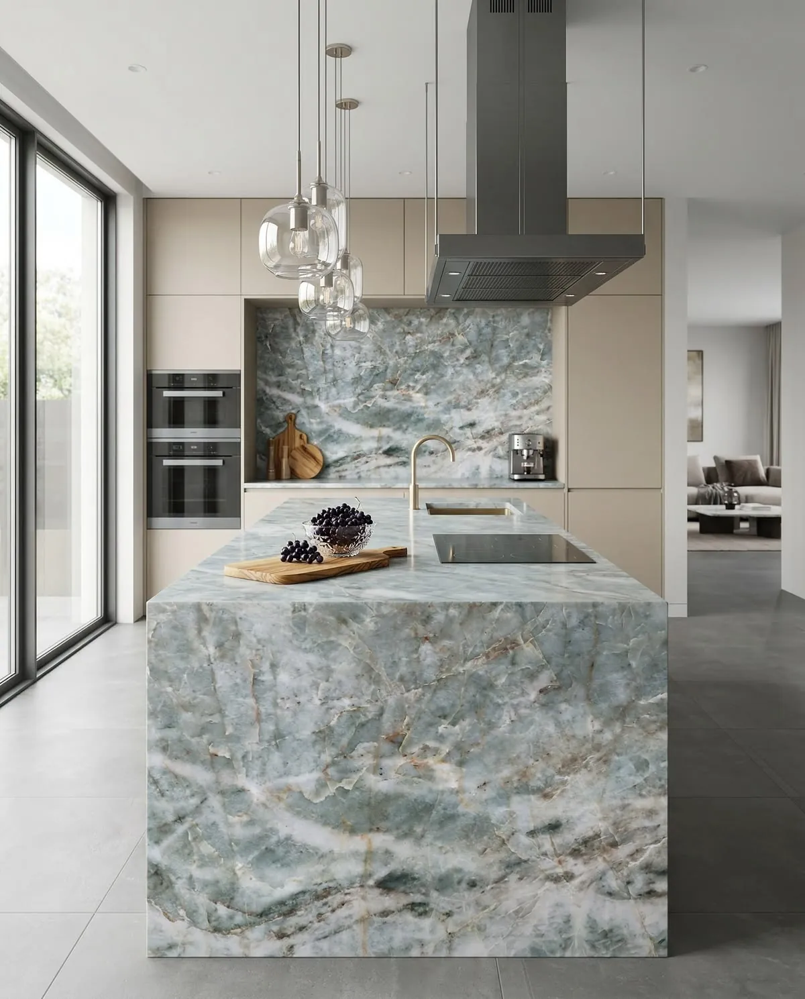
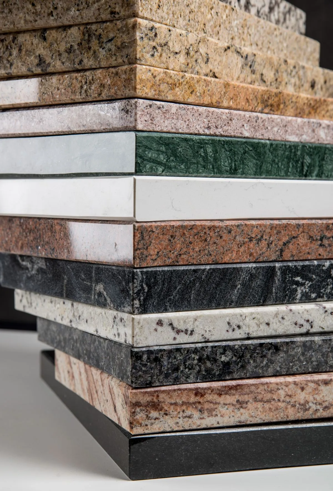
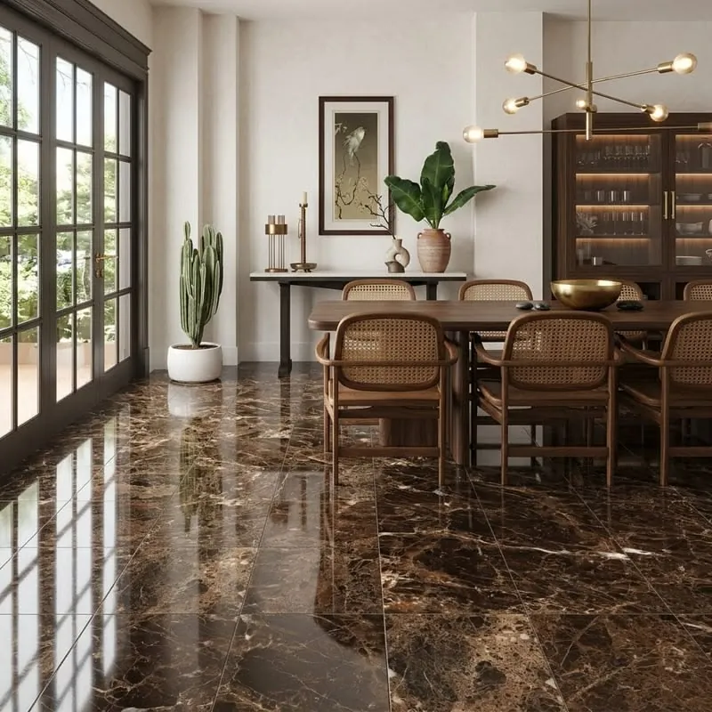
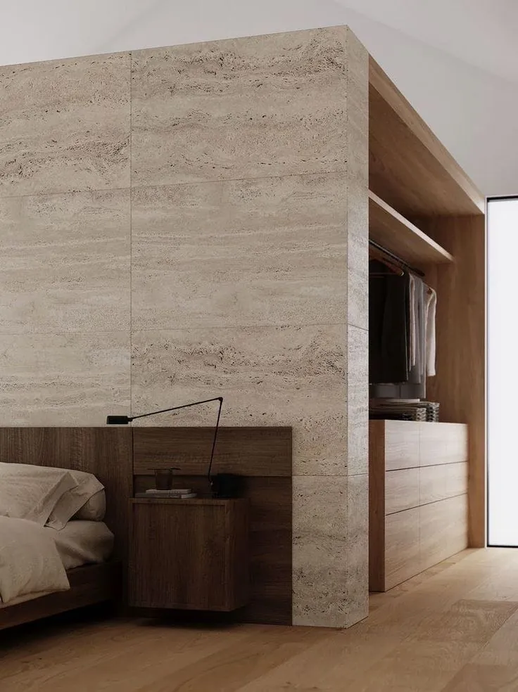
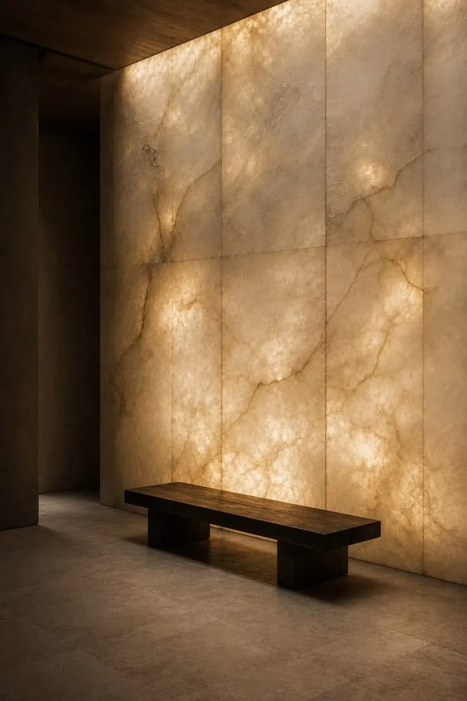

BEKAMAR / DOĞAL TAŞLAR
Yerin derinliğinden,
yaşam alanlarına.
Milyonlarca yıllık jeolojik süreçlerin şekillendirdiği her taş, doğanın kendine özgü bir izini taşır. Quartzite, granit, mermer, traverten ve Onyx’in karakterini keşfedin.
TAŞLARI KEŞFEDİN ↓01 — 05
01 / NATURAL STONE
QUARTZITE
Quartzite koleksiyonu ve ürün bulunurluğu hakkında bilgi almak için ekibimizle iletişime geçin.
QUARTZITE HAKKINDA BİLGİ AL ↗
02 / MAGMATİK KAYAÇ
GRANİT
Yerkabuğunun derinliklerinde magmanın milyonlarca yıl boyunca yavaşça soğuyup kristalleşmesiyle oluşan granit, doğanın en dayanıklı kayaçlarından biridir. Kuvars, feldispat ve mika gibi minerallerin bir araya gelmesiyle kendine özgü kristalli dokusunu kazanır. Sert yapısı, zengin renk seçenekleri ve karakteristik mineral desenleriyle mimaride estetik ve dayanıklılığı bir arada sunar.
GRANİT KOLEKSİYONUNU KEŞFET ↗
03 / METAMORFİK KAYAÇ
MERMER
Milyonlarca yıllık jeolojik dönüşümün bir ürünü olan mermer, kireçtaşı ve dolomit gibi kayaçların yüksek sıcaklık ve basınç altında yeniden kristalleşmesiyle meydana gelir. Bu doğal dönüşüm, mermere kendine özgü damarlarını, renk geçişlerini ve kristalli yapısını kazandırır. Her bloğunda farklı bir desen barındıran mermer, zamansız estetiğiyle mimari ve iç mekân tasarımlarının vazgeçilmez malzemelerindendir.
MERMER KOLEKSİYONUNU KEŞFET ↗
04 / TORTUL KAYAÇ
TRAVERTEN
Doğal kaynak sularının taşıdığı kalsiyum karbonatın zamanla çökmesiyle oluşan traverten, suyun ve minerallerin yeryüzünde bıraktığı eşsiz bir izdir. Gözenekli yapısı, doğal boşlukları ve sıcak toprak tonlarıyla diğer doğal taşlardan ayrılır. Kendine özgü dokusu sayesinde klasik ve modern mimaride doğal, sıcak ve karakterli yaşam alanları oluşturur.
TRAVERTEN KOLEKSİYONUNU KEŞFET ↗
05 / DOĞAL TAŞ
ONYX
Onyx, katmanlı damarları ve ışık geçirgenliğiyle dikkat çeker. Arkadan aydınlatıldığında renk geçişleri ve bantlı dokusu belirginleşir. Bu özelliğiyle duvar panellerinde, resepsiyon bankolarında ve dekoratif yüzeylerde kullanılır.
ONYX KOLEKSİYONUNU KEŞFETDOĞANIN İZİ, HER TAŞTA BAŞKA
Projeniz için doğal taş seçkisini
birlikte keşfedelim.